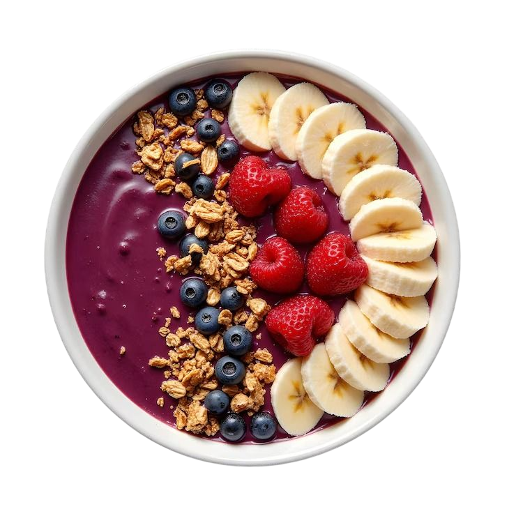

Açaí Bowl Básico y Nutritivo
El tazón de frutas más popular. Un batido espeso de bayas de açaí congeladas, plátano y un sinfín de toppings saludables para un desayuno revitalizante.
⏱️ Tiempo total: 5 min
🍴 Porciones: 1
💪 Dificultad: Muy Fácil

Ingredientes
- 100g de pulpa de açaí congelada (sin azúcar).
- 1 plátano (banana) congelado.
- 1/4 taza de líquido (leche vegetal, jugo de naranja o agua).
- Toppings Sugeridos:
- Granola casera.
- Frutas frescas rebanadas (fresas, arándanos, kiwi).
- Miel o jarabe de agave (opcional).
Preparación
- Paso 1: Preparar la Base. Coloca la pulpa de açaí congelada, el plátano congelado y el líquido en una licuadora de alta potencia.
- Paso 2: Licuar. Licúa a velocidad media-alta. Detente y empuja los ingredientes hacia abajo con una espátula si es necesario. **Usa la menor cantidad de líquido posible** para lograr una consistencia muy espesa, similar a un helado.
- Paso 3: Servir. Vierte la mezcla espesa en un tazón.
- Paso 4: Decorar. Decora con tus toppings favoritos. La granola casera le da un contraste crujiente necesario. Termina con un chorrito de miel o sirope si lo deseas. Sirve inmediatamente antes de que se derrita.